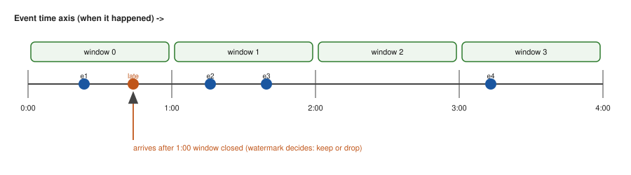
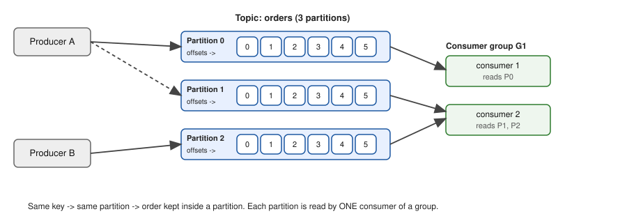

In this chapter
So far our ShopKart pipelines were batch: wait for the day to end, then process the day. But the fraud team says, "We cannot wait until tomorrow to learn that a stolen card was used 40 times in 5 minutes." The marketing team wants a live dashboard of orders per minute. For this you need streaming: processing each event within seconds of its birth. Streaming brings new problems that batch never had: events arrive late and out of order, machines crash halfway, and the same message may be delivered twice. In this chapter you will learn the four ideas that solve them (event time, windows, watermarks, delivery semantics), see Apache Kafka's log model with partitions and consumer groups, and compare Spark Structured Streaming and Apache Flink. You will run two simulations, so the ideas are numbers and not slogans.
Honest note: Kafka, Flink and Spark are not installed in this sandbox (the package network is blocked). Everything marked "not run here" is standard code you should test on your own machine. Every simulation shown with output was really run, using only the Python standard library. They are teaching toys, not Kafka.
11.1 Event Time, Windows and Watermarks
Words you need
| Word | Plain meaning | ShopKart example |
|---|---|---|
| Event | One fact that happened | "order 881 placed at 10:00:05" |
| Event time | When the event really happened (in the data) | order_ts field |
| Processing time | When our system sees it | the clock of the stream job |
| Out-of-order | Arrives in a different order than it happened | a phone offline in a lift sends orders later |
| Window | A bucket of event time over which we aggregate | "orders per minute" |
| Tumbling window | Fixed size, no overlap, no gaps | [0,60), [60,120), ... |
| Sliding (hopping) window | Fixed size, a new one starts every slide; windows overlap | 60 s long, every 30 s |
| Session window | Closes after a quiet gap with no events | one shopping visit ends after 60 s of silence |
| Watermark | "No event with time earlier than W will arrive any more" (a promise we choose) | max event time seen minus 2 minutes |
| Late data | An event whose window is already closed by the watermark | an order that shows up 5 minutes late |
| State | Memory the job keeps between events (counts per window) | the running count per window |
Why not just use processing time?
Processing time is simple and cheap, but the answer changes if the system is slow, restarted, or replays old data. Run the job again tomorrow on the same file and you get different numbers. Event time gives the same answer for the same data, which is what the business means by "orders between 10:00 and 10:01". The price is that we must handle lateness.

How to read the picture: the horizontal line is event time (when things happened). The boxes are windows of equal length. Each dot is an event placed by its own timestamp, not by when it arrived. An event that arrives late still goes into the old box; the question is only how long we keep the box open.
The three window types, with real numbers
Let ShopKart send order events with these event times in seconds: 5, 20, 62, 75, 130, 135, 400. We run /tmp/de_lab2/kafka_sim.py (stdlib only):
from collections import defaultdict
ev=[5,20,62,75,130,135,400]
def tumbling(ev,w=60):
d=defaultdict(int)
for t in ev: d[(t//w)*w]+=1
return dict(sorted(d.items()))
def sliding(ev,w=60,s=30):
d={}
for st in range(0,max(ev)+1,s):
c=sum(1 for t in ev if st<=t<st+w)
if c: d[st]=c
return d
def session(ev,gap=60):
ss=[[ev[0]]]
for t in ev[1:]:
if t-ss[-1][-1]<=gap: ss[-1].append(t)
else: ss.append([t])
return [(s[0],s[-1],len(s)) for s in ss]
print("tumbling 60:",tumbling(ev)); print("sliding 60/30:",sliding(ev)); print("session gap 60:",session(ev))Before you run it, predict: how many tumbling windows will have a count, and will the event at time 400 be alone? Real output:
tumbling 60: {0: 2, 60: 2, 120: 2, 360: 1}
sliding 60/30: {0: 2, 30: 2, 60: 2, 90: 2, 120: 2, 360: 1, 390: 1}
session gap 60: [(5, 135, 6), (400, 400, 1)]Line by line:
- Tumbling:
(t//60)*60is integer division, which rounds the time down to the start of its minute. 5 and 20 go to window 0; 62 and 75 to window 60; 130 and 135 to window 120; 400 to window 360 (400 // 60 = 6, and 6 × 60 = 360). Windows with no events (180, 240, 300) are not printed. - Sliding, length 60 and slide 30: a new window starts every 30 s, so one event belongs to two windows (length / slide = 2). Event 400 lies in [360,420) and [390,450), so it counts once in window 360 and once in window 390. (We only start windows at multiples of 30 from 0, so we do not show the window starting at -30 for the first events.)
- Session with gap 60: 5, 20, 62 (gap 42), 75, 130 (gap 55), 135: every gap is 60 or less, so it is one session with 6 events, from 5 to 135. Then 400 comes after a gap of 265, so a new session starts.
Problem 11.1.1 Using tumbling windows of 60 s, which window does the event at time 119 belong to, and which does 120 belong to?
| Formula | window start = (t // 60) × 60, window is [start, start + 60) |
|---|---|
| Plug in | t = 119: 119 // 60 = 1, so start = 60. t = 120: 120 // 60 = 2, so start = 120. |
| Compute | 119 is in [60,120). 120 is in [120,180). |
| Answer | 119 goes to window 60, and 120 to window 120. |
| Check | Windows are closed on the left and open on the right, so the boundary second 120 belongs only to the later window. No event is in two tumbling windows. |
| Why it matters | Off-by-one at the window edge is the most common bug in "orders per minute" dashboards. |
Problem 11.1.2 A sliding window is 10 minutes long and slides every 2 minutes. In how many windows does one event appear? A 5-minute window slides every 5 minutes: how many?
| Formula | windows per event = window length / slide |
|---|---|
| Plug in | 10 / 2 and 5 / 5 |
| Compute | 5 and 1 |
| Answer | 5 windows for the first one; the second is really a tumbling window, so 1. |
| Check | If slide equals length, windows do not overlap. That is the definition of tumbling. |
| Why it matters | A sliding window multiplies state and output by length / slide. A "last 24 hours, updated every second" window would be 86,400 copies of each event: a design smell. Use smaller overlap or incremental aggregation. |
Watermarks: when is a window final?
The rule used by most engines:
watermark = (largest event time seen so far) − (allowed lateness)
a window [a, b) is final (emitted, state freed) when b ≤ watermark
an event whose window is already final is "too late": dropped (or sent to a side output)Here is a real run of /tmp/de_lab/stream.py: 1-minute windows, allowed lateness 120 s, ten events listed in arrival order (the number is event time in seconds).
"""Event-time tumbling window (1 min) with watermark (allowed lateness 2 min)."""
from collections import defaultdict
events=[(5,"a"),(20,"b"),(62,"c"),(58,"d"),(130,"e"),(75,"f"),(10,"g"),(200,"h"),(125,"i"),(3,"j")]
W=60; LATE=120
counts=defaultdict(int); max_et=0; emitted={}; dropped=[]
def wstart(t): return (t//W)*W
for et,name in events:
max_et=max(max_et,et); wm=max_et-LATE
if wstart(et)+W<=wm: # window already closed by watermark
dropped.append((name,et)); print(f"event {name} t={et:3d} wm={wm:4d} -> DROPPED (too late)"); continue
counts[wstart(et)]+=1
print(f"event {name} t={et:3d} wm={wm:4d} -> window [{wstart(et)},{wstart(et)+W}) count={counts[wstart(et)]}")
for w in sorted(list(counts)):
if w+W<=wm and w not in emitted: emitted[w]=counts[w]; print(f" emit final window [{w},{w+W}) = {counts[w]}")
print("final counts:",dict(sorted(counts.items())),"dropped:",dropped)Real output:
event a t= 5 wm=-115 -> window [0,60) count=1
event b t= 20 wm=-100 -> window [0,60) count=2
event c t= 62 wm= -58 -> window [60,120) count=1
event d t= 58 wm= -58 -> window [0,60) count=3
event e t=130 wm= 10 -> window [120,180) count=1
event f t= 75 wm= 10 -> window [60,120) count=2
event g t= 10 wm= 10 -> window [0,60) count=4
event h t=200 wm= 80 -> window [180,240) count=1
emit final window [0,60) = 4
event i t=125 wm= 80 -> window [120,180) count=2
event j t= 3 wm= 80 -> DROPPED (too late)
final counts: {0: 4, 60: 2, 120: 2, 180: 1} dropped: [('j', 3)]Walk through it. Event d has time 58 but arrives after c (62): out of order, yet it still lands in window [0,60) because the watermark is still negative. Event g (time 10) arrives after e (130), 120 seconds "behind" the newest, and is still accepted because the watermark (10) has not yet passed the end of window [0,60). Then h (time 200) moves the watermark to 80, which is past 60, so window [0,60) is emitted with count 4. When j (time 3) arrives, its window is final, so it is dropped.
Problem 11.1.3 Using the run above, what is the watermark after the event with time 200 arrives, and why is window [60,120) NOT yet final?
| Formula | watermark = max event time − allowed lateness |
|---|---|
| Plug in | 200 − 120 |
| Compute | 80. A window is final when its end ≤ 80. Window [60,120) ends at 120, and 120 ≤ 80 is false. |
| Answer | The watermark is 80, and window [60,120) stays open until the watermark reaches 120, which needs an event with time 240 or more. |
| Check | 240 − 120 = 120, so the end 120 ≤ 120 becomes true. Matches. |
| Why it matters | Bigger allowed lateness means more correct counts but more waiting (higher latency) and more state in memory. It is a trade you choose, with data, by measuring how late your events really are (say, 99.9% arrive within 90 s). |
Problem 11.1.4 In the same run, what would the final count of window [0,60) be if the allowed lateness were 300 s instead of 120 s? Is event j still dropped?
| Step 1 | With 300 s, watermark = 200 − 300 = −100 after h, and −100 after everything else. Window [0,60) ends at 60, and 60 ≤ −100 is false, so it never closes during the run. |
|---|---|
| Step 2 | So j (time 3) is accepted into [0,60). The count goes from 4 to 5. Nothing is emitted early. |
| Answer | Count 5, j is kept, but the result for [0,60) would appear later than before. |
| Check | Total events: 10 and none dropped, so 5 + 2 + 2 + 1 = 10 (windows 0, 60, 120, 180). Yes: window 60 has c and f (2), window 120 has e and i (2), window 180 has h (1). |
| Why it matters | This is the lateness versus freshness dial. Fraud wants low latency and accepts some drops; billing wants correctness and accepts a long wait. |
The picture of a late event
event time -> 0 60 120 180 240
windows [ W0 ---][ W1 ---][ W2 ---][ W3 ---]
arrival 1: a(5) b(20)
arrival 5: e(130)
arrival 8: h(200) watermark = 80 -> W0 closes
arrival 10: j(3) ---> its window W0 is closed: droppedConnection to the real job
- A data engineer chooses the window type, the allowed lateness and what to do with late data: drop, send to a side output (a "late events" topic for later repair), or update the old result (an "upsert" into a table).
- The same business number is often produced twice: a fast, slightly wrong streaming number and a slow exact batch number that overwrites it (the Lambda idea from Chapter 1). Many teams keep the stream for freshness and the nightly batch as the source of truth.
Applications
- Data Engineering: orders per minute, clicks per session, revenue per hour with a late-data side output.
- Fraud and risk: card used more than 5 times in a 10-minute sliding window.
- MLOps: streaming features such as "average basket in last 30 minutes".
- Observability: request count and error rate per minute from logs; the p95 from a sliding window.
Check yourself
- A 5-minute tumbling window starts at 10:00. Which window does an event at 10:04:59 belong to? Answer: [10:00, 10:05).
- Max event time seen is 10:20:00 and allowed lateness is 3 minutes. What is the watermark? Answer: 10:17:00.
- Why can a session window not have a fixed size? Answer: it ends when a quiet gap appears, so its length depends on the user's behaviour.
11.2 Kafka: The Log, Partitions, Consumer Groups and Delivery Semantics
Words you need
| Word | Plain meaning | ShopKart example |
|---|---|---|
| Broker | A Kafka server that stores partitions | 3 broker machines |
| Topic | A named stream of messages | orders, clicks |
| Partition | One ordered log, a slice of a topic | orders-0, orders-1, orders-2 |
| Offset | The position number of a message inside a partition | message 5 of orders-1 |
| Producer | Program that writes messages | the checkout service |
| Consumer | Program that reads messages | the fraud scorer |
| Consumer group | Consumers sharing the work of one topic; each partition goes to one consumer of the group | group fraud with 3 consumers |
| Committed offset | The bookmark saved by a group: "I have finished up to here" | group fraud is at offset 900 of orders-1 |
| Lag | How far behind the end of the log a group is | end 1180 minus committed 900 = 280 |
| Retention | How long messages are kept | 7 days |
| Replication, ISR | Copies of each partition on other brokers; ISR is the set of copies that are in sync | factor 3 |
| Key | A value used to choose the partition | customer_id |

How to read the picture: producers on the left write into the topic orders. The topic is cut into three partitions, each a row of numbered boxes (the offsets). New messages are added at the right end. On the right, a consumer group G1 reads: consumer 1 reads partition 0, consumer 2 reads partitions 1 and 2. The note at the bottom is the key rule: same key, same partition, and order is kept only inside a partition.
Keys, partitions and order
The producer picks the partition from the message key: partition = hash(key) mod number_of_partitions. Real Kafka uses a hash called murmur2; we use CRC32 as a stand-in. Seven events with three customers:
import zlib
P=3
def part(key): return zlib.crc32(key.encode())%P
msgs=[("u1","click"),("u2","buy"),("u1","view"),("u3","click"),("u2","view"),("u1","buy"),("u3","buy")]
logs={0:[],1:[],2:[]}
for k,v in msgs: logs[part(k)].append((k,v))
for p in range(P): print("partition",p,logs[p])Real output:
partition 0 [('u2', 'buy'), ('u2', 'view')]
partition 1 []
partition 2 [('u1', 'click'), ('u1', 'view'), ('u3', 'click'), ('u1', 'buy'), ('u3', 'buy')]Read it: all of u2 went to partition 0 and all of u1 to partition 2, in the original order, so each customer's story stays in order. But partition 1 is empty and partition 2 holds 5 of 7 messages. With only 3 keys, the hash cannot balance. This is partition skew, the streaming cousin of the Spark data skew in Chapter 10. A key with a few huge values (a "hot key", like one giant merchant) makes one partition and one consumer the bottleneck.
Consumer groups: the scaling rule
Each partition is read by exactly one consumer of a group. So the most useful consumers in a group equals the number of partitions.
def assign(consumers,parts):
a={}
for i,p in enumerate(parts): a.setdefault(consumers[i%len(consumers)],[]).append(p)
return a
for n in (1,2,3,4):
print(n,"consumers ->",assign([f"c{i+1}" for i in range(n)],[0,1,2]))1 consumers -> {'c1': [0, 1, 2]}
2 consumers -> {'c1': [0, 2], 'c2': [1]}
3 consumers -> {'c1': [0], 'c2': [1], 'c3': [2]}
4 consumers -> {'c1': [0], 'c2': [1], 'c3': [2]}The fourth consumer gets nothing. It sits idle as a standby. That is why you pick the partition count with growth in mind: you can add partitions later, but doing so changes hash(key) mod P, so keys move to other partitions and per-key order breaks across the change. Real Kafka also has other assignment strategies and "rebalancing" (a pause while partitions are reassigned when a consumer joins or leaves); the toy shows only the idea.
Two different groups reading the same topic are independent: the fraud group and the dashboard group each have their own offsets. This is the "publish once, many readers" power of a log.
Problem 11.2.1 A topic has 12 partitions. A consumer group has 5 consumers. How many partitions does each consumer read (as evenly as possible)? What happens with 15 consumers?
| Formula | partitions per consumer = ⌈12 / 5⌉ at most, and the total must be 12 |
|---|---|
| Plug in | 12 = 5 × 2 + 2 |
| Compute | 2 consumers read 3 partitions, 3 consumers read 2 partitions: 2×3 + 3×2 = 12 |
| Answer | 3 or 2 partitions each. With 15 consumers, 12 read one partition each and 3 are idle. |
| Check | 6 + 6 = 12. Max useful consumers = 12 = partitions. |
| Why it matters | The partition count is the ceiling on consumer parallelism. If the capacity test says you need 20 consumers, you need at least 20 partitions (Chapter 13 shows the sizing). |
Problem 11.2.2 Consumer lag: end offsets of a 3-partition topic are {0: 1200, 1: 1180, 2: 1500} and the group's committed offsets are {0: 1200, 1: 900, 2: 1100}. What is the lag per partition and in total? If messages come in at 500/s but the group handles 420/s, how fast does the backlog grow?
| Formula | lag = end offset − committed offset |
|---|---|
| Compute | partition 0: 0; partition 1: 280; partition 2: 400. Total 680. Growth = 500 − 420 = 80 per second, so 80 × 3600 = 288,000 messages per hour. |
| Answer | Total lag is 680 messages, and the backlog grows by 288,000 per hour at that gap. |
| Check | Real run of the same arithmetic printed {0: 0, 1: 280, 2: 400} total 680 and 80 msg/s -> 288000 msg/hour. |
| Why it matters | Lag is THE metric for consumers. A flat lag is healthy. A lag that rises every minute means arrival rate is higher than service rate: the queue is unstable (like a bank queue where customers arrive faster than the tellers can serve them: utilization above 100%, see Chapter 14). |
Delivery semantics: at-most-once, at-least-once, exactly-once
A consumer reads a message, does the work, and saves its bookmark (commit). A crash can happen between the two. The order of these two steps defines the guarantee.
| Guarantee | Order of steps | After a crash | Cost |
|---|---|---|---|
| At-most-once | commit, then process | message may be lost, never repeated | simple, loses data |
| At-least-once | process, then commit | message may be repeated, never lost | the usual default |
| Exactly-once (effect) | at-least-once plus an idempotent or transactional sink | result as if processed once | more design work |
Simulation, with a crash while handling message 4 (messages 1 to 6):
def run(commit_first):
log=list(range(1,7)); committed=0; processed=[]; crashed=False
while committed<len(log):
off=committed
if commit_first:
committed=off+1
if off==3 and not crashed: crashed=True; continue # crash: message 4 lost
processed.append(log[off])
else:
processed.append(log[off])
if off==3 and not crashed: crashed=True; continue # crash before commit: reprocess
committed=off+1
return processed
print("at-most-once:",run(True)); print("at-least-once:",run(False))
sink={}
for m in run(False): sink[m]=f"row{m}"
print("idempotent sink keys:",sorted(sink),"rows:",len(sink))at-most-once: [1, 2, 3, 5, 6]
at-least-once: [1, 2, 3, 4, 4, 5, 6]
idempotent sink keys: [1, 2, 3, 4, 5, 6] rows: 6At-most-once lost message 4. At-least-once processed 4 twice. Writing by key (sink[m] = ..., the same idea as MERGE or "upsert" from Chapters 4 and 6) turns the duplicate into a harmless overwrite: 7 deliveries, 6 rows, each correct. That is how "exactly-once" is achieved in practice: at-least-once delivery plus an idempotent write. Remember the CDC replay at the end of Chapter 4: same idea.
What real Kafka adds (standard facts; behaviour details depend on version and configuration, so read the docs of your version):
- Producer
acks:acks=0(do not wait),acks=1(leader wrote it),acks=all(all in-sync replicas wrote it). For no data loss useacks=allwith replication factor 3 andmin.insync.replicas=2. - Idempotent producer (
enable.idempotence=true): the broker drops duplicates caused by producer retries. - Transactions: a producer can write to several partitions and commit consumer offsets atomically, so a read-process-write loop inside Kafka (Kafka Streams, Flink) can be exactly-once. A write to an outside database still needs an idempotent sink.
- Retention and compaction: by time or size, delete old segments; or log compaction, which keeps only the latest message per key (like a table's current state; good for "latest customer profile").
- Replication and ISR: each partition has one leader and followers. If the leader's machine dies, an in-sync follower becomes leader.
- Schema Registry with Avro or Protobuf: stores message schemas and checks compatibility, the "data contract" of Chapter 5 for streams.
- Kafka Connect: ready-made source and sink connectors (for example Debezium for CDC, and sinks into object storage or a warehouse). Kafka Streams and ksqlDB: stream processing as a library or in SQL.
- KRaft: newer Kafka clusters keep their own metadata with a Raft-based quorum and do not need ZooKeeper (the older design).
- Alternatives: AWS Kinesis, Azure Event Hubs, Google Pub/Sub (managed logs), Redpanda (Kafka-compatible), Pulsar (log plus queue), RabbitMQ (queue, for task distribution, not replay).
Minimal consumer code, not run here (library confluent-kafka; check your version):
# not run here
from confluent_kafka import Consumer
c = Consumer({"bootstrap.servers": "localhost:9092",
"group.id": "fraud",
"enable.auto.commit": False,
"auto.offset.reset": "earliest"})
c.subscribe(["orders"])
while True:
msg = c.poll(1.0)
if msg is None or msg.error():
continue
upsert_to_db(msg.key(), msg.value()) # idempotent write first
c.commit(msg) # then commit: at-least-onceProblem 11.2.3 A consumer processes a message in 4 ms of work and then commits in 1 ms. If it crashes at a random moment during one message, what fraction of crashes cause a duplicate under "process then commit"?
| Formula | a duplicate occurs when the crash is after the work finished but before the commit finished |
|---|---|
| Plug in | the risky window is the commit step: 1 ms out of 5 ms total |
| Compute | 1 / 5 = 0.2 |
| Answer | About 20% of crashes (assuming a uniform crash time) lead to one duplicate; none lose data. Batching commits (commit every 500 messages) makes the duplicates bigger after a crash, which is why the sink must be idempotent. |
| Check | Under "commit then process" the risky window is the 4 ms of work: 4/5 = 80% of crashes would lose the message. |
| Why it matters | You can compute the cost of each guarantee instead of arguing about it. |
Connection to the real job
- Kafka is the "central nervous system" between services and the data platform: app events, CDC (Debezium, Chapter 4), logs.
- You will be asked "how many partitions?", "what if a consumer is slow?", "how do you avoid duplicates?" in interviews. The answers are above.
- Think of a bank: partitions are counters (parallelism), lag is the length of the queue, and a consumer group is the team of tellers. Chapter 14 measures its capacity.
Applications
- Data Engineering: ingest app events to the lake, CDC from databases, fan-out to many teams.
- MLOps: a stream of predictions and feedback for monitoring; features computed on the stream.
- Microservices: event-driven integration, audit logs, outbox pattern.
- Observability: log and metric shipping into search and OLAP stores.
customer_id as the key. Another mistake: too few partitions at the start, then adding more later and breaking key order.Check yourself
- Topic has 8 partitions and a group has 3 consumers. Can you speed up by adding a 9th consumer? Answer: no more than 8 consumers can work; the 9th is idle.
- Which semantics lose data on a crash? Answer: at-most-once.
- A group's committed offset is 5,000 and the log end is 5,350. What is the lag? Answer: 350 messages.
11.3 Processing Engines: Spark Structured Streaming, Flink and Real-Time OLAP
Spark Structured Streaming
You write the same DataFrame or SQL code as in batch (Chapters 9 and 10). Spark runs it repeatedly on micro-batches (small batches, often a few hundred milliseconds to some seconds), or in a continuous mode with some limits. The progress (offsets read) is saved in a checkpoint directory so after a crash the job continues. Windows and watermarks are declared in the query, exactly like Section 11.1. Example, not run here (PySpark, API checked against current docs: confirm on your version):
# not run here
from pyspark.sql import functions as F
orders = (spark.readStream.format("kafka")
.option("kafka.bootstrap.servers", "broker:9092")
.option("subscribe", "orders").load()
.select(F.from_json(F.col("value").cast("string"), schema).alias("o"))
.select("o.*")) # columns: order_ts, city, amount
per_minute = (orders
.withWatermark("order_ts", "2 minutes") # allowed lateness
.groupBy(F.window("order_ts", "1 minute"), "city")
.agg(F.count("*").alias("orders"), F.sum("amount").alias("revenue")))
(per_minute.writeStream
.outputMode("append") # emit a window once it is final
.format("delta").option("checkpointLocation", "/chk/orders_per_min")
.start("/lake/gold/orders_per_min"))Line by line: readStream with format kafka makes an unbounded DataFrame. withWatermark("order_ts", "2 minutes") is the lateness rule from 11.1 (max event time seen minus 2 minutes). window("order_ts","1 minute") is the tumbling window. Output modes: append (emit rows only when final, which needs the watermark), update (emit changed rows each trigger), complete (rewrite the whole result, only for small results). The checkpoint location is required for recovery. With a transactional or idempotent sink such as Delta, the job gives an end-to-end exactly-once effect.
Apache Flink
Flink processes each event as it arrives (low latency, often milliseconds), has first-class event time, rich keyed state (kept in memory or in an embedded store such as RocksDB), and periodic checkpoints (consistent snapshots of all state plus input positions). After a failure it restores the last checkpoint and replays from there. Its two-phase commit sinks can give end-to-end exactly-once. It also has flexible window and timer APIs and "CEP" (pattern detection like "login failure 5 times then success"). Flink SQL lets you write streaming SQL. Not run here:
-- not run here (Flink SQL; check your version's syntax)
SELECT window_start, window_end, city, COUNT(*) AS orders
FROM TABLE(TUMBLE(TABLE orders, DESCRIPTOR(order_ts), INTERVAL '1' MINUTE))
GROUP BY window_start, window_end, city;Choosing
| Question | Spark Structured Streaming | Flink | Kafka Streams / ksqlDB |
|---|---|---|---|
| Typical latency | seconds (micro-batch) | milliseconds to seconds | milliseconds to seconds |
| Best when | team already uses Spark, batch and stream share code | very low latency, complex state, event-time logic | Kafka-to-Kafka logic inside a service |
| Runs as | Spark cluster or Databricks | Flink cluster, managed Flink | a normal app (a library), no cluster |
| Learning curve for a Spark user | small | medium | small |
Rule of thumb: if "a minute of delay is fine", micro-batches or even a batch job every 5 minutes is simpler and cheaper. Streaming costs more to run and to debug: machines run all day, and bugs show up at 2 a.m. Choose streaming only for a stated freshness requirement.
Backpressure
Backpressure means a slow stage tells the fast stage before it to slow down, so memory does not blow up. In Kafka it is natural: the log holds messages while consumers lag (lag rises, memory does not). In Flink it is built into the network buffers. A rising lag with healthy CPU often points to a slow sink (a database that cannot take the writes): see the bottleneck example in Chapter 14.
Real-time OLAP and serving
Dashboards on streams need fast aggregate queries on fresh data. Apache Pinot, Druid and ClickHouse are columnar stores built for this: they ingest from Kafka and answer group-by queries in milliseconds over billions of rows. Compare with a warehouse (Chapter 8): the warehouse is for deep analysis with seconds-to-minutes queries and minutes of freshness; real-time OLAP is for user-facing and ops dashboards with sub-second queries.
CDC streaming to a lakehouse

How to read the picture: the orders database writes its own change log (WAL or binlog). Debezium reads that log and publishes each insert, update, delete as an event into Kafka. A job reads the topic and applies a MERGE into the lake or warehouse table. We simulated the apply step in Chapter 4: replaying events 3 and 4 again changed nothing, because upserts and deletes by key are idempotent. Chapter 13 designs the whole pipeline with numbers.
Problem 11.3.1 A Structured Streaming job uses a 1-minute window and watermark "2 minutes". Max event time seen is 12:10:30. Which window is the latest one that can be final, and which window is open but not final?
| Formula | watermark = 12:10:30 − 2 min = 12:08:30; a window is final if its end ≤ watermark |
|---|---|
| Compute | window [12:08:00, 12:09:00) ends at 12:09:00, and 12:09:00 ≤ 12:08:30 is false. Window [12:07:00, 12:08:00) ends at 12:08:00 ≤ 12:08:30: true. |
| Answer | [12:07:00, 12:08:00) is the latest final window. [12:08:00, 12:09:00) is still open. |
| Check | Same arithmetic as the verified simulation: wm = 200 − 120 = 80 closed window [0,60) but not [60,120). |
| Why it matters | In append mode, a result for 12:08 is visible only after the watermark passes 12:09:00: the output is delayed by the lateness plus the window length. Tell the business this delay up front. |
Problem 11.3.2 A job must produce "orders per city per minute" with at most 10 s of delay, and 1% of events arrive up to 90 s late. What do you decide?
| Step 1 | The two needs conflict: 10 s delay cannot wait for 90 s late events. |
|---|---|
| Step 2 | Emit early results (update mode, a result every 10 s per window) and let them be corrected as late events arrive, with a 2-minute watermark. Send events later than that to a side topic, and let the nightly batch (Chapter 6) correct the final number. |
| Answer | Use update-mode output with a 2-minute watermark plus a nightly batch as the source of truth, and show the dashboard as "provisional" for the last 2 minutes. |
| Check | 2 minutes covers the 90 s tail with margin, and the dashboard can refresh every 10 s. |
| Why it matters | Real streaming design is negotiating latency against correctness with measured lateness numbers. |
Connection to the real job
- Streaming jobs are "always on": you need monitoring for lag, checkpoint age, state size and watermark delay, and a runbook for restart (Chapter 12).
- State grows without bound if windows never close or keys never expire: set TTLs.
- Testing streaming code: unit-test the window function with a list of events (as our simulation does), then run a small replay of real data before production.
Applications
- Data Engineering: Kafka to Delta/Iceberg tables with Structured Streaming; CDC apply jobs.
- Fraud and payments: Flink with keyed state and timers (card velocity checks).
- ML: online feature computation, streaming inference scoring.
- Ad-tech and gaming: real-time counters in Pinot or Druid.
complete output mode on a large aggregation: Spark must keep and rewrite the entire result every trigger. Another: changing the query and re-using the old checkpoint directory; many changes are not compatible with old state.Check yourself
- Which engine usually has lower latency, Spark micro-batch or Flink? Answer: Flink.
- What does a checkpoint store? Answer: the input positions (offsets) plus state, so the job can restart from there.
- Name the pair that gives end-to-end exactly-once in practice. Answer: at-least-once processing plus an idempotent (or transactional) sink.
Chapter recap
- Streaming processes events within seconds; it needs event time, because processing time changes with delays and replays.
- Windows group events by time: tumbling (fixed, no overlap), sliding (overlap, one event in length/slide windows), session (gap-based).
- A watermark = max event time seen − allowed lateness. A window is final when its end ≤ watermark; later events are dropped or side-routed.
- Kafka is a partitioned, replicated, append-only log. Order exists only within a partition; the key decides the partition.
- A consumer group shares partitions: one partition per consumer at a time, so useful consumers ≤ partitions. Lag = end offset − committed offset.
- At-most-once loses data, at-least-once repeats, exactly-once effect = at-least-once plus an idempotent sink (or transactions inside Kafka).
- Structured Streaming = micro-batches with the DataFrame API and checkpoints; Flink = true event-at-a-time with state and checkpoints; real-time OLAP (Pinot, Druid, ClickHouse) serves fresh dashboards.
- Choose streaming only for a stated freshness need; measure lateness before choosing the watermark.
| Pattern | Rule |
|---|---|
| Tumbling window start | (t // W) × W |
| Windows per event (sliding) | length / slide |
| Watermark | max event time − allowed lateness |
| Window final | end ≤ watermark |
| Partition for a key | hash(key) mod P |
| Max useful consumers | number of partitions |
| Lag | end offset − committed offset |
| No data loss producer | acks=all, replication 3, min.insync.replicas=2 |
| Exactly-once effect | at-least-once + idempotent write |
Practice set
1. (easy) Tumbling windows of 5 minutes. Which window holds an event at 14:07:30?
Answer: [14:05, 14:10).
2. (easy) Sliding window length 30 s, slide 10 s. In how many windows does one event appear?
Answer: 30 / 10 = 3.
3. (easy) Log end offset 10,000, committed 9,400. Lag?
Answer: 600 messages.
4. (medium) Allowed lateness 90 s, max event time seen 09:30:00. What is the watermark, and is a window [09:28:00, 09:29:00) final?
Answer: Watermark 09:28:30. The window ends at 09:29:00, and 09:29:00 ≤ 09:28:30 is false, so it is not final.
5. (medium) What is the output? session([5,20,62,75,130,135,400], gap=30) using the function from 11.1 (gap rule: same session if the difference is at most 30).
Answer: Gaps: 15, 42, 13, 55, 5, 265. A new session starts after each gap greater than 30, so the sessions are (5, 20, 2 events), (62, 75, 2 events), (130, 135, 2 events), (400, 400, 1 event): [(5, 20, 2), (62, 75, 2), (130, 135, 2), (400, 400, 1)]. (We checked the gaps by hand: 20−5=15, 62−20=42, 75−62=13, 130−75=55, 135−130=5, 400−135=265.)
6. (medium, find the bug) A consumer does commit(); process(msg). The team complains of missing orders after deployments. Why, and what is the fix?
Answer: It is at-most-once: a crash or restart after the commit and before the processing finishes loses the message. Process first, with an idempotent write, then commit.
7. (medium) A topic has 6 partitions. A capacity test shows one consumer handles 800 msg/s, and peak arrival is 4,000 msg/s. How many consumers are needed, and is 6 partitions enough with headroom?
Answer: 4,000 / 800 = 5 consumers just to keep up. With 6 partitions only 6 consumers can work: 6 × 800 = 4,800, only 20% headroom. Better to have 8 or more partitions (about 1.5 times: 8 × 800 = 6,400 gives 60% headroom).
8. (medium) Events: c (time 62) arrives, then a (time 5). Lateness is 0. Is a dropped?
Answer: Watermark = 62 − 0 = 62 after c; window [0,60) ends at 60 ≤ 62, so it is final, and a is dropped. This is why zero lateness drops anything out of order.
9. (scenario) The dashboard's "orders in the last minute" falls to zero every night at 03:00 for 10 minutes while the shop is still active. List 3 likely causes in order of how you would test them.
Answer: (1) Consumer lag: check lag at 03:00 (a nightly batch hitting the same cluster or database). (2) A partition or source going idle so the watermark stops, and windows never close. (3) A deployment or consumer-group rebalance at 03:00 (check the job restart times). Also check time zone handling at the day boundary.
10. (interview) Explain "exactly-once" in Kafka in 4 sentences.
Answer: Delivery in a real network is at-least-once, because a retry after a missing acknowledgement can duplicate. Kafka's idempotent producer removes duplicates from producer retries, and transactions let a read-process-write loop inside Kafka commit its outputs and its consumer offsets atomically. For a sink outside Kafka, such as a database, you make the write idempotent (upsert by key) or transactional. So "exactly-once" is an effect of careful design, not a magic property of the network.
11. (interview) A hot key makes one partition get 60% of the traffic. What do you do?
Answer: First confirm with per-partition lag and bytes. Then choose a better key (for example customer_id instead of merchant_id), or add a salt to the key (merchant_id + random 0..9) and combine results downstream, or split the hot key into its own topic with more consumers. Salting breaks per-key ordering, so use it only if order is not required.
Prompt pack
You are my patient, practical professor. I am a working professional moving into data roles, and English is my second language. Teach me event time versus processing time, tumbling, sliding and session windows, and watermarks. Use an online shop with events that arrive late, and real numbers in seconds. Explain step by step, then ask me 4 questions one at a time about which window an event goes into and when a window becomes final.
You are my patient, practical professor. I am a working professional moving into data roles, and I am learning data engineering. Topic: Apache Kafka topics, partitions, keys, offsets, consumer groups and lag. Use a log-as-notebook analogy. Then give me 8 graded exercises with numbers (partition choice, number of consumers, lag and backlog growth) without solutions. I will paste my answers for review: [PASTE HERE]
You are my patient, practical professor. I am a working professional moving into data roles. Topic: delivery semantics at-most-once, at-least-once and exactly-once in Kafka consumers, idempotent producers, transactions and idempotent sinks. Show a crash between process and commit with a small example, and explain why exactly-once is end-to-end design. Then quiz me one question at a time with scenarios.
You are my patient, practical professor. I am a working professional moving into data roles, and I am applying for data engineer roles. Compare Spark Structured Streaming, Apache Flink and Kafka Streams: latency, state, checkpoints, windows, watermarks, when to choose each. Give me 5 business cases (fraud, live dashboard, CDC apply, IoT, clickstream) and ask me to choose an engine and justify it in 3 sentences. Then critique my answers.
You are my patient, practical professor. I am a working professional moving into data roles, and I am applying for data engineer roles. Run a mock interview on streaming: event time, windows, watermarks, late data, Kafka partitions and keys, consumer lag, rebalancing, exactly-once, backpressure and hot keys. Ask 8 questions one at a time. After each answer give a score from 1 to 5, a model answer in simple English, and a follow-up. My answers: [PASTE HERE]